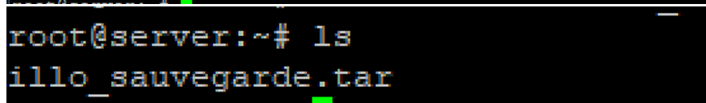
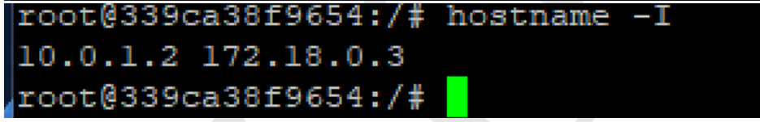
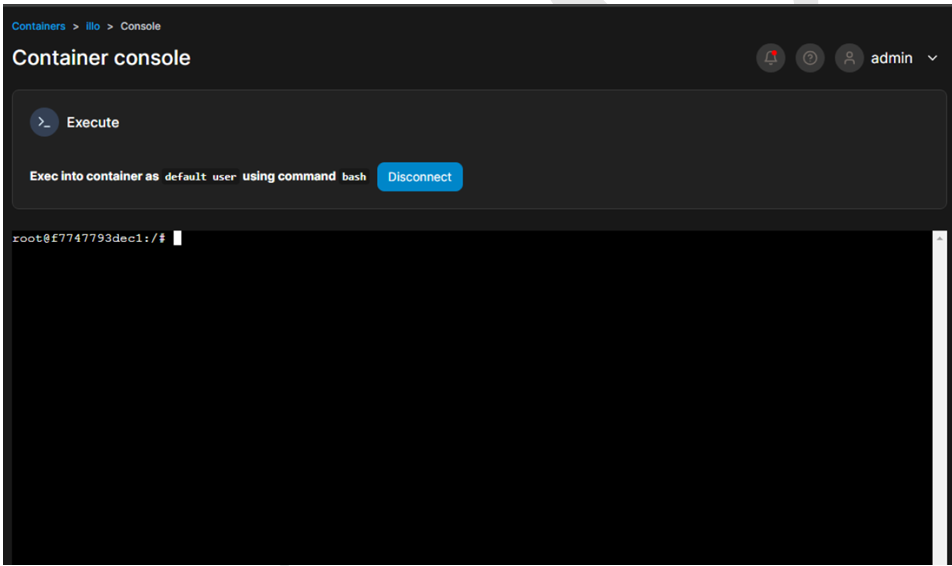

Configurations Docker sur Debian12
Docker permet la mise en œuvre de conteneurs s'exécutant en isolation, via une API de haut-niveau. Construit sur des capacités du noyau Linux (surtout les cgroups et espaces de nommage), un conteneur Docker, à l'opposé de machines virtuelles traditionnelles, ne requiert aucun système d'exploitation séparé et n'en fournit aucun. Il s'appuie plutôt sur les fonctionnalités du noyau et utilise l'isolation de ressources (comme le processeur, la mémoire, les entrées et sorties et les connexions réseau) ainsi que des espaces de noms séparés pour isoler le système d'exploitation tel que vu par l'application. Docker accède aux capacités de virtualisation du noyau Linux, soit directement à travers la bibliothèque runc (disponible depuis Docker 0.9), soit indirectement via libvirt, LXC (Linux Containers) ou systemd-nspawn.
Installation de Docker
apt-get update
apt-get upgrade
apt -y install docker.io
Administration de Docker
Rechercher une image Debian dans Docker Hub
docker search debian
Télécharger l'image
docker pull debian
Lister les images Docker
docker images -a
Supprimer une image Docker
docker rmi Image_id
Conteneurs Docker
Un conteneur est un processus ou un ensemble de processus isolés du reste du système, tout en étant légers. Le conteneur permet de faire de la virtualisation légère, c'est-à-dire qu'il ne virtualise pas les ressources, il ne crée qu'une isolation des processus. Le conteneur partage donc les ressources avec le système hôte.
Afficher les conteneurs en cours d'exécution
docker ps
Créer et lancer un conteneur
docker run -it --name nomConteneur nomImage
Une fois que le conteneur est créé, vous êtes automatiquement connecté à une session interactive du conteneur grâce aux options -i et -t. Pour quitter la session interactive du conteneur tout en laissant le conteneur fonctionner en arrière-plan, appuyez sur les touches [Ctrl+p] puis [Ctrl+q].
Affichons à nouveau la liste des conteneurs en cours d’exécution
docker ps
Inspecter un conteneur
docker inspect nomConteneur
Supprimer un conteneur
docker rm -f nomConteneur
Supprimer tous les conteneurs
docker rm -f $(docker ps -aq)
La Sauvegarde
Par défaut, le stockage des machines docker est volatile. C’est-à-dire dès que nous arrêtons le conteneur, tout le travail fait à l’intérieur sera perdu. Dans cette partie, nous allons apprendre à sauvegarder le travail fait sur un conteneur dans un espace spécifique.
Sauvegarde en local
Pour sauvegarder nos conteneurs, nous avons plusieurs méthodes, des méthodes de sauvegarde locales et celles qui consistent à faire des sauvegardes en ligne (sur le docker hub) en privé ou en public. Pour sauvegarder un conteneur, il faut tout d’abord que le processus existe. C’est-à-dire, il faut que le conteneur soit lancé. La sauvegarde se fait comme suit :
docker commit id_conteneur nom_sauvegarde
Dès que nous lançons la sauvegarde, le conteneur sera vu par le système comme une image. Voici d’ailleurs la preuve de ce que nous avançons :
Puisqu’un conteneur est démarré à partir d’une image, donc à ce stade, il est possible de démarrer un conteneur avec la sauvegarde que nous venons de faire.
Exporter l’image
Nous pouvons même exporter la sauvegarde dans un fichier tar (une archive), afin de pouvoir la lancer sur une autre machine par exemple. Nous allons exporter notre image sauvegardée dans un fichier tar.
docker save nom_sauvegarde > nom_sauvegarde.tar

À ce stade tout le travail effectué sur le conteneur a été sauvegardé dans ce fichier, donc rien ne sera perdu dorénavant !
Sauvegarde en ligne
Ah oui, il est possible de sauvegarder une image en ligne, et cela va accroître la portabilité
de celle-ci car nous pourrons la télécharger depuis n’importe quelle machine. Pour réaliser
cela, il faut tout d’abord disposer d’un compte docker. Pour créer un compte docker, il faudra
cliquer ici Après création du compte, il faut tout d’abord réaliser la tâche précédente (celle de
la sauvegarde en local).
Authentification
Cette étape est vraiment cruciale car c’est à ce niveau qu’il faut permettre à notre machine de se
connecter à notre compte en ligne.
docker login
À partir de ce moment, cette machine peut accéder au compte docker de illo927 et y stocker des images.
Créer un tag pour notre image à exporter
Le nom de l’image respecte une convention de nommage. Cette convention de nommage veut
que si notre image n’est pas officielle, il faut mettre votre ID (votre login Docker Hub) au début
de l’image suivi d'un slash (/) ensuite suivi du nom propre que vous donnez à l’image (suivant
son contenu).
Donc après s’être connecté, mon ID docker étant illo927, je tape la commande suivante :
docker tag id_image id_docker/nom_sauvegarde
Pour réellement envoyer l’image en ligne, il faut faire ceci :
docker push id_docker/nom_sauvegarde
Notre image vient d’être uploadée ! Voici la preuve qui montre que notre conteneur est vraiment en ligne :
La restauration
La restauration d’une image docker n’est rien d’autre que démarrer un conteneur à partir d’une sauvegarde déjà faite !
Restauration à partir de l’image
Nous allons lancer un nouvel conteneur auquel nous allons associé la sauvegarde
docker run -it --name nouveaunom nomsauvegarde bash
Restauration à partir du fichier tar
Pour restaurer un conteneur en local, il suffit d’utiliser la commande docker load et de lui indiquer en paramètre le chemin d’accès à notre fichier de sauvegarde.
docker run -it --name nouveau illo_sauvegarde.tar
Supposé que la sauvegarde soit faite sur une autre machine et que je récupère cette version archivée de la sauvegarde, dès que je tape la commande ci-dessus, j’aurai automatiquement cette sauvegarde dans ma liste d’images en local !
Restauration depuis un conteneur en ligne
Pour restaurer une image que nous avons sauvegardée sur le hub en ligne il suffit d’utiliser la commande classique docker pull pour rapatrier l’image en local comme pour n’importe qu’elle image hébergée sur le docker Hub . Pour montrer que notre conteneur est vraiment en ligne, téléchargeons-le à partir d’une machine tierce.
docker pull illo927/illo_sauvegarde1
Vérification
docker images
La Gestion du réseau avec Docker
Les conteneurs Dockers étant cloisonnés dans des Hôtes physiques ou virtuels, nous avons l’impression qu’il est donc impossible d’interagir avec eux à travers le réseau. Cela n’est qu’une illusion. Dans cette partie, nous allons présenter le mode de fonctionnement du système réseau des conteneurs Dockers avec pratique à l’appui .
Le Driver bridge
Tout d'abord, lorsque vous installez Docker pour la première fois, il crée automatiquement un réseau bridge nommé bridge connecté à l'interface réseau docker0 ( consultable avec la commande ip addr show docker0 ). Chaque nouveau conteneur Docker est automatiquement connecté à ce réseau, sauf si un réseau personnalisé est spécifié. Par ailleurs, le réseau bridge est le type de réseau le plus couramment utilisé. Il est limité aux conteneurs d'un hôte unique exécutant le moteur Docker. Les conteneurs qui utilisent ce driver, ne peuvent communiquer qu'entre eux, cependant ils ne sont pas accessibles depuis l'extérieur. Voici l’interface de docker qui constitue la passerelle par défaut des conteneurs
ip addr sh docker0
Mise en œuvre
Lançons deux conteneurs
docker run -it --name machine1 illo927/illo_sauvegarde1
À chaque première connexion sur l'interface interactive d'un conteneur Docker, il faut mettre à jour les paquets pour bénéficier des dernières versions et correctifs de sécurité
apt update
hostname -I
le second conteneur
docker run -it --name machine2 illo927/illo_sauvegarde1
hostname -I
Nous constatons que c’est du NAT qui agit
route -n
Il est le réseau couramment utilisé et les conteneurs utilisant ce driver peuvent communiquer entre eux, cependant ils ne sont pas accessibles depuis l’extérieur. L’alternative permettant aux conteneurs du réseau bridge de communiquer ou d’être accessibles au monde extérieur consiste à configurer le mappage des ports.
Le Driver host
Ce type de réseau permet aux conteneurs d'utiliser la même interface que l'hôte. Il supprime donc l'isolation réseau entre les conteneurs et seront par défaut accessibles de l'extérieur. De ce fait, il prendra la même IP que votre machine hôte. Voici les informations de la machine hôte
docker run --rm --network host -it --name nom_reseau nomconteneur bash
ifconfig nominterface
exit
Voici les informations de la machine hôte
C’est la même adresse IP !
Le Driver overlay
Si vous souhaitez une mise en réseau multi-hôte native, vous devez utiliser un driver overlay. Il crée un réseau distribué entre plusieurs hôtes possédant le moteur Docker. Docker gère de manière transparente le routage de chaque paquet vers et depuis le bon hôte et le bon conteneur. En termes claires, cette configuration nous permet de mettre dans le même réseau des conteneurs dockers lancés sur des machines différentes !
Mise en œuvre
Nous allons lancer deux conteneurs sur deux machines différentes :
docker swarm init --advertise-addr adresseserver
L’information colorée contient le jeton qui sera envoyé au niveau des différentes machines afin que les conteneurs soient intégrés dans le réseau.
Créer un réseau Overlay
docker network create --driver=overlay --attachable reseau-overlay
Lancer un conteneur dans le réseau
docker run -it --name machine3 --network reseau-overlay debian bash
hostname -I
Nous voyons clairement que le conteneur a obtenu deux adresses IP. Mais celle qui nous intéresse est 10.0.1.2 car le conteneur qui sera lancé sur l’autre machine physique sera dans le même réseau !
Envoie du Token
Sur la machine physique, Créer un fichier dans lequel mettre le token qui avait été généré et l’envoyer à l’autre machine physique. Sur la machine 2 Nous allons joindre la machine 2 au réseau grâce au jeton reçu !
docker swarm join --token SWMTKN-1-1pvf1lj22rt79easdmspmvofjzq4kdh4i7yq810w2g4v635egv-0efqi7njvpk6a91dupuk2pea9 192.168.100.1:2377
Lister les différents réseau et voir ce qui se passe :
sudo docker network ls
Notre Driver Overlay a bien été créé !
Connecter un conteneur de la machine 4 au réseau
sudo docker run -it --name machine4 --network reseau-overlay debian bash
hostname -I
Test de connectivité
ping -c4 machine4
ça marche comme sur des roulettes !
Pour quitter le réseau, il faut faire ceci "depuis le serveur principal" :
docker network rm reseau-overlay
Portainer
Portainer est un outil open source de gestion d'applications conteneurisées. Il fonctionne avec Kubernetes, Docker, Docker Swarm, Azure ACI dans les deux centres de données et à la périphérie. Portainer supprime la complexité associée aux orchestrateurs afin que tout le monde puisse gérer les conteneurs. Il peut être utilisé pour déployer et gérer des applications, observer le comportement des conteneurs et fournir la sécurité et la gouvernance nécessaires pour déployer largement les conteneurs. Portainer CE (open source) est approuvé par plus de 500 000 utilisateurs dans le monde. Portainer Business s'appuie sur la fondation open source et permet aux organisations d'exécuter des applications conteneurisées à grande échelle sans avoir besoin d'embaucher de nouvelles personnes ou de requalifier les équipes existantes.
Mise en place de portainer
déploiement du serveur
◆ Commençons par créer un volume
docker volume create portainer_data
docker volume ls
◆ Nous allons lancer le conteneur en arrière plan en précisant le port à utiliser et le fichier d’accueil des données .
docker run -d -p 8000:8000 -p 9000:9000 --name=portainer restart=always -v /var/run/docker.sock -v portainer_data:/data portainer/portainer.ce
Note : Le port 8000 est celui du deamon, le 9000 est le port du client ! En claire
docker image ls
Nous pouvons vérifier les processus qui tournent sur les ports 8000 et 9000
netstat -anp | grep -w 8000
Nous allons accéder à l’interface de Portainer comme suit
IP:le_port_définit
Pour une première connexion, il faudra donner un mot de passe au compte admin par défaut
http://192.168.100.1:9000
Après création de l’utilisateur et authentification, nous aurons une interface comme celle-ci :
Lorsque nous cliquons sur conteneur qui est affiché, nous aurons un tableau de bord très intéressant qui nous affiche beaucoup d’informations
Affichons par exemple la liste de nos images
◆ Lançons un nouveau conteneur
Cliquer sur Ajouter un conteneur et mettre des informations comme le nom du conteneur et l’image qui sera utilisée.
Au niveau de la console, nous avons plusieurs choix (Cette partie est très importante, car c‘est elle qui définie la politique de démarrage du conteneur)
Pour valider la création du conteneur, il faudra dérouler la barre pour cliquer sur Déployer un conteneur comme sur la figure ci-dessous :
Nous aurons la liste des conteneurs
Nous voyons clairement que notre conteneur a été créé !
docker ps

Nous pouvons accéder à la console de notre conteneur en cliquant sur l’icône de console qui se trouve devant le nom du conteneur pour avoir l’interface suivante :

Cliquer sur Connect
Voilà nous pouvons tout faire ici !Lançons un conteneur en ligne de commande en mode interactif
Comme nous l’avons constaté, nous pouvons faire énormément de choses avec cet outil !